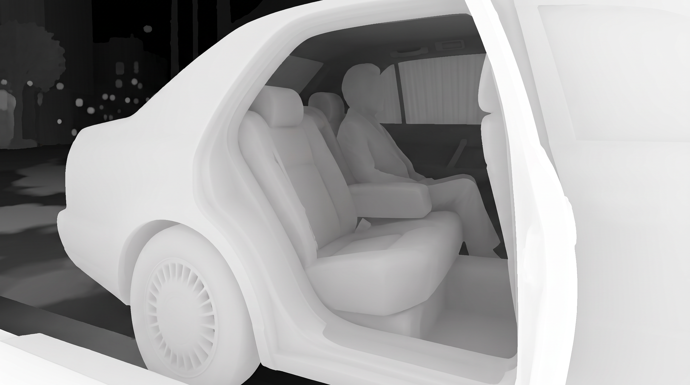
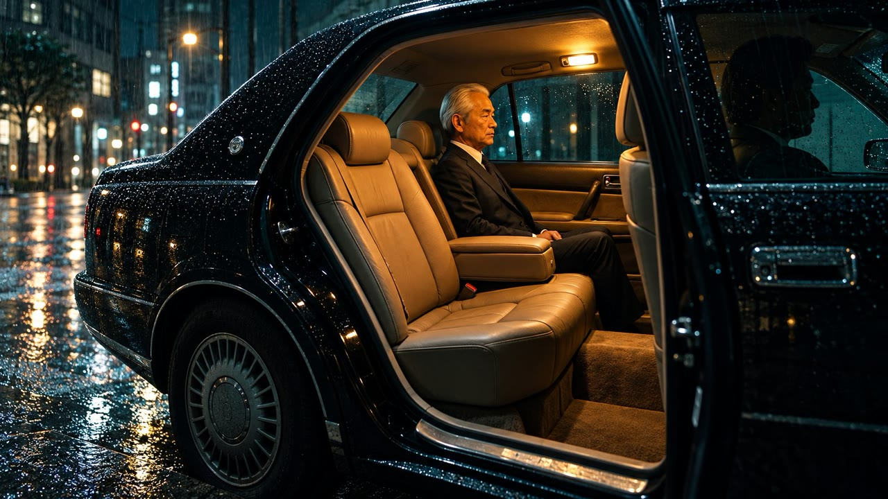

SHOT 01 · nw_s94 · 94 — Only tea · nw_b1562
Its rear door stands open
“Its rear door stands open: warm amber light, leather.”


- Installed
/film/depth/recreated-uncut/1562-sedan-door-depth.jpg- Camera
- static · push · amount 0.28 · 8 s
- Depth asset
depth-uncut-1562(bundled inline)
Prompt
Create a pure greyscale DEPTH MAP (a Z-pass render) for the supplied 16:9 cinematic film still — not a photograph, not a shaded render. Use the reference only to trace exactly what is where: keep the identical framing, crop and 16:9 aspect, and align every silhouette edge precisely to the reference with clean, crisp, unfeathered boundaries. Luminance encodes distance only: no texture, no colour, no lighting, no highlights, no rain streaks, no grain, no vignette, no border, no text, no signature. Nearest surfaces, near-white (about 0.92-0.98): the wet black car bodywork and its open rear door frame across the right and lower right of frame, the front door pillar and window glass at the far right edge, and the wet curb/asphalt strip in the bottom-left foreground. Second nearest, light grey (about 0.72-0.85): the open car door's inner trim and window sill, the wheel arch and rear wheel in the lower left, the door step plate and carpeted sill. Mid-ground, mid grey (about 0.45-0.62): the pale beige leather rear seat cushions and backrest, the centre armrest, and the seated silver-haired older man in a dark suit — his head, shoulders, torso and legs each a smooth slightly-lighter-on-near-face gradient, still one continuous mid-grey mass clearly readable as the seated figure. Farther, dark grey (about 0.22-0.38): the far side of the interior, the window frames and headliner of the car, the door light on the headliner, and the parked white blinds of the opposite windows. Background, near-black (about 0.04-0.14): the rain-soaked night street beyond the car — the wet road with reflected light pools as small soft mid-dark patches, the dark building facades and tree line, and the distant out-of-focus bokeh lights as small soft mid-grey dots. Sky at the very top darkest. Every surface must be a smooth continuous gradient across the object, each object marginally lighter toward its near edge, with hard clean separation where one object occludes another. Single flat greyscale depth map, full-bleed 16:9, no colour anywhere.